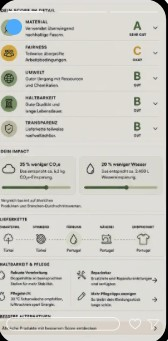
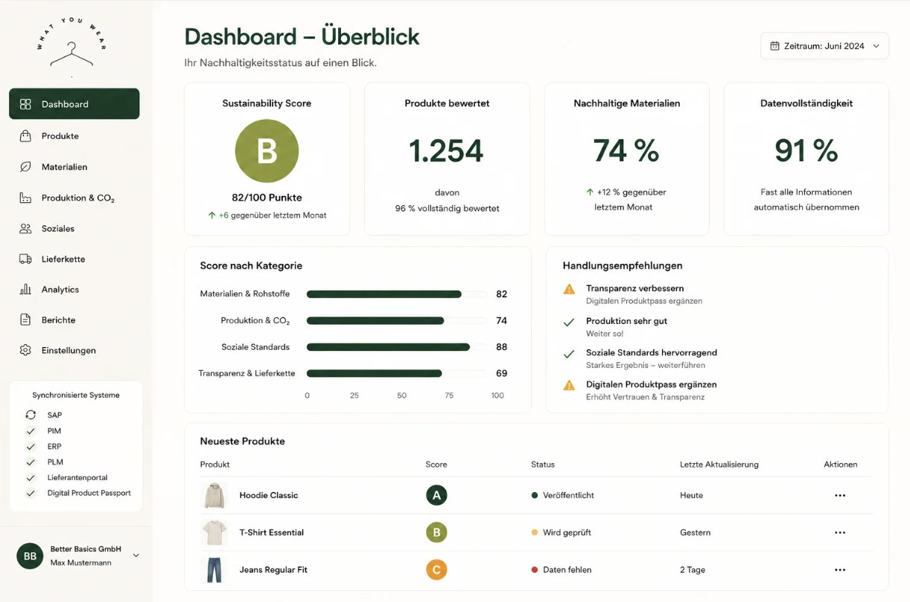

Textilien pro Person
So viel Kleidung, Schuhe und Haushaltstextilien wurden 2022 in der EU durchschnittlich konsumiert – etwa ein großer Koffer.
Quelle: EEA, 2025 ↗Ein Label, das nicht einfach behauptet, sondern erklärt. What You Wear übersetzt Materialien, Produktion, soziale Standards und Lieferketten in einen Score, den Menschen verstehen.
Ein gemeinsamer Rahmen für
Nachhaltigkeitsinformationen sind vorhanden, aber über Labels, PDFs, Lieferanten und Systeme verteilt. Gleichzeitig wächst der Anspruch an überprüfbare Aussagen und strukturierte Produktdaten.
So viel Kleidung, Schuhe und Haushaltstextilien wurden 2022 in der EU durchschnittlich konsumiert – etwa ein großer Koffer.
Quelle: EEA, 2025 ↗Mehr als die Hälfte der untersuchten Umweltaussagen war laut einer EU-Kommissionsstudie vage, irreführend oder unbegründet.
Quelle: EU-Kommission ↗Viele Zeichen, wenig Vergleichbarkeit. What You Wear zeigt deshalb nicht nur ein Ergebnis, sondern Datenlage und Nachweise.
Quelle: EU-Kommission ↗„Vertrauen entsteht nicht durch mehr Claims, sondern durch bessere Belege.“
What You Wear ersetzt bestehende Zertifikate nicht. Es führt sie mit Produkt-, Produktions- und Lieferkettendaten zusammen und übersetzt die Datenlage in eine verständliche Orientierung.
Ein durchgängiger Workflow verbindet Teams, Nachweise und Konsument:innen – ohne die Komplexität zu verstecken.
Materialmix, Herkunft, CO₂e, Audits und Lieferstufen strukturiert erfassen oder importieren.
Zertifikate und Dokumente direkt den relevanten Produktdaten zuordnen.
Gewichtete Teilwerte ergeben eine Orientierung von A bis E – mit sichtbarer Datenvollständigkeit.
Label, QR-Profil, Produktpass und Bericht aus einem Datenstand veröffentlichen.
Was hinter dem B steckt, wird mit einem Scan sichtbar.

Die Demo nutzt die Gewichtung aus dem Konzept. Jede Kategorie bleibt einzeln sichtbar, damit ein guter Gesamtwert keine Schwäche verdeckt.
Bewertet wird nicht nur die Faserbezeichnung, sondern auch Herkunft, Anteil und belegte Standards. Beispiel: 95 % Bio-Baumwolle mit gültigem GOTS-Nachweis.
Produktbezogene CO₂e-Daten, Energiemix und Transportwege bilden den Produktionswert. Fehlende Primärdaten senken die Datenvollständigkeit.
Soziale Nachweise werden sichtbar ausgewiesen. Das Konzept unterscheidet zwischen dokumentierter Policy, Audit und verifiziertem Ergebnis.
Je mehr Lieferstufen und Dokumente verifiziert sind, desto höher der Transparenzwert. Der Status wird getrennt vom Impact dargestellt.
Pflege und Reparierbarkeit beeinflussen die erwartete Nutzungsdauer. Die Kategorie kann je nach finaler Methodik integriert oder separat ausgewiesen werden.
Die EU-Ökodesignverordnung (ESPR) schafft den Rahmen für produktspezifische Anforderungen und den Digitalen Produktpass. Textilien, insbesondere Bekleidung und Schuhe, gehören im Arbeitsplan 2025–2030 zu den priorisierten Produktgruppen.
EU-Arbeitsplan ansehen ↗Wichtig: Der ESPR-Rahmen gilt bereits, konkrete Anforderungen für Textilien werden jedoch über nachgelagerte produktspezifische Rechtsakte festgelegt. What You Wear ist als vorbereitende Daten- und Kommunikationslogik konzipiert, nicht als Rechtsberatung oder garantierte Compliance-Lösung.
Das B2B-Dashboard führt die Arbeitsschritte zusammen, die heute oft in Tabellen, Laufwerken und Einzeltools verteilt sind.

Suche, Filter, Status und Scores an einem Ort.
Material, Produktion und Lieferkette strukturiert bearbeiten.
Vollständigkeit und nächste Schritte sichtbar machen.
Label, Produktpass und Bericht exportieren.
Score sehen, QR-Code scannen und nachvollziehen, wie das Produkt bewertet wurde.
Scan-Erlebnis ansehen →Produktdaten, Nachweise, Handlungsfelder und Kommunikation aus einer Oberfläche steuern.
Unsere Kommunikation stützt sich auf öffentlich zugängliche Primärquellen. Aussagen zur Wirkung einzelner Materialien oder Produkte werden erst gemacht, wenn produktspezifische Daten und Nachweise vorliegen.
Erlebt den kompletten Workflow am Beispiel des Hoodie Classic.
Erstelle einen neuen Datensatz. Details kannst du anschließend in den Modulen ergänzen.